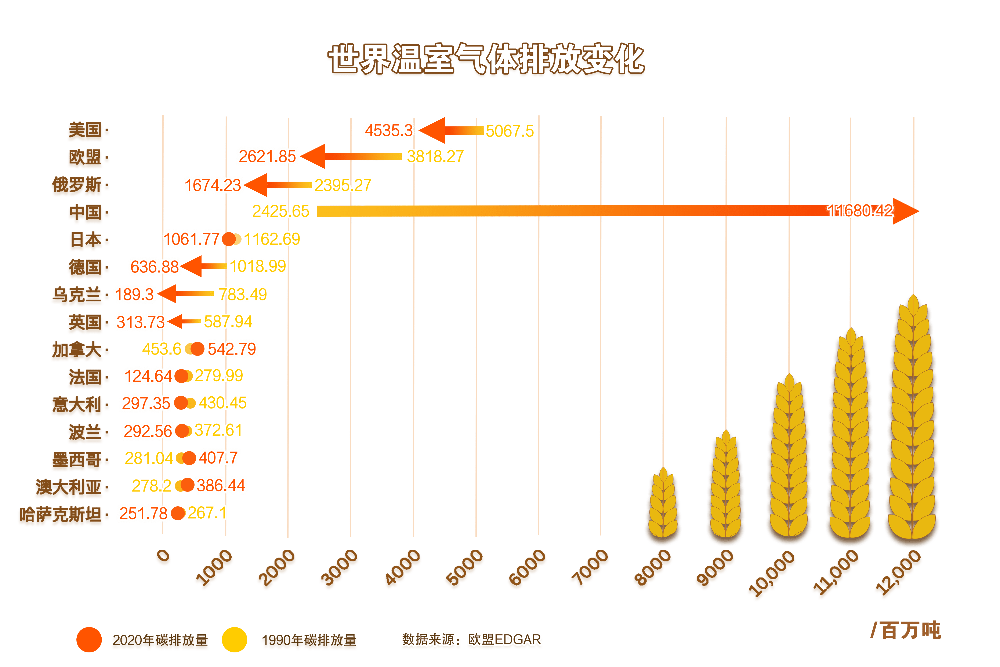
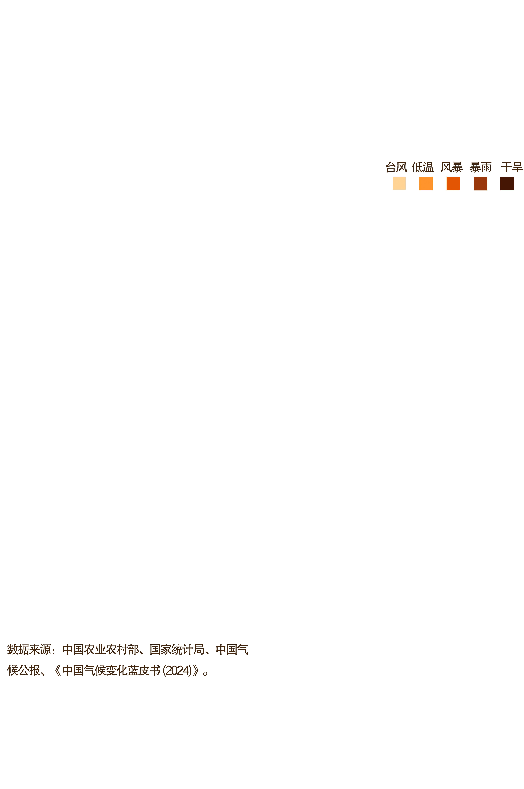
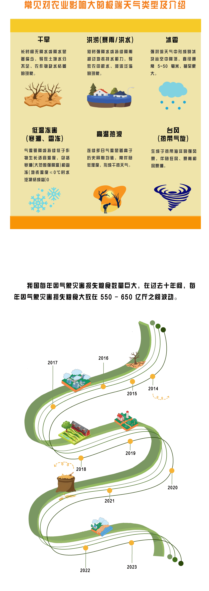

理解天气对粮食的影响
首先要看其根源之一
气候变化背后的碳排放
研究发现食物浪费产生的温室气体排放占全球总量8%-10%，相当于航空业排放量的5倍。与此同时，被浪费食物的可食用部分可为全球7.83亿饥饿人口每人每天提供1.3顿饭。

具体到国家碳排放来看，中国、美国是全球碳排放前二的国家，但碳排放走势有所不同。中国碳排放量逐年上升，而美国反之。目前，中国还处于发展中国家，经济发展仍需要大量的煤炭能消耗，碳排放仍在增加。
碳排放驱动的大气候变暖直接表现为
降水格局改变和气温异常升高
而极端天气对农业的负面影响也逐渐蔓延


我国每年因气象灾害损失粮食数量巨大，在过去十年间，每年因气象灾害损失粮食大致在 550 - 650 亿斤之间波动。

2019 - 2024年间，气象灾害在我国导致农作物受灾、人员伤亡与经济损失。
暴雨洪涝、干旱等灾害占比各有起伏。
这不仅警示着气候对农业生产的直接冲击，更深刻反映出气候因素在粮食安全层面的潜在损耗。
我们必须高度重视气候对粮食的影响
以应对气候变化、减轻灾害损失
筑牢粮食安全防线，守护人类赖以生存的根基。